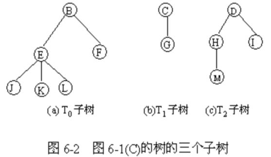

第六章 树和二叉树
§6.1 树的定义和基本术语
1、树的定义
▲：树是由n（n≥0）个结点组成的有限集合。若n=0，称为空树；若n>0，则：
（1）有且仅有一个特定的称为根（root）的结点。它只有直接后继，但没有直接前驱；
（2）除根结点以外的其它结点可以划分为m（m≥0）个互不相交的有限集合T0，T1，…，Tm-1，每个集合Ti（i=0,1,…,m-1）又是一棵树，称为根的子树，每棵子树的根结点有且仅有一个直接前驱，但可以有0个或多个直接后继。
由此可知，树的定义是一个递归的定义，即树的定义中又用到了树的概念。
树的结构参见图6-1。
在图6-1(c)中，树的根结点为A，该树还可以分为三个互不相交子集T0，T1，T2，具体请参见图6-2，其中T0={B，E，F，J，K，L}，T1={C，G}，T2={D，H，I，M}，其中的T0，T1，T2都是树，称为图6-1（C）中树的子树，而T0，T1，T2又可以分解成若干棵不相交子树。如T0可以分解成T00，T01两个不相交子集，T00={E，J，K，L}，T01={F}，而T00又可以分为三个不相交子集T000，T001，T002，其中，T000={J}，T001={K}，T002={L}。

2、树的逻辑结构描述 一棵树的逻辑结构可以用二元组描述为：
tree =(k,R) vk={ki∣1≤i≤n;n≥0,ki∈elemtype}
R={r}
其中，n为树中结点个数，若 n=0，则为一棵空树， n> 0时称为一棵非空树，而关系 r 应满足下列条件：
（1）有且仅有一个结点没有前驱,称该结点为树根;
（2）除根结点以外,其余每个结点有且仅有一个直接前驱;
（3）树中每个结点可以有多个直接后继(孩子结点)。
例如，对图6-1(c )的树结构,可以二元组表示为：
K={A，B，C，D，E，F，G，H，I，J，K，L，M}
R={r}
r={(A,B)，(A,C)，(A,D)，(B,E)，(B,F)，(C,G)，(D,H)，(D,I)，(E,J)，(E,K)，(E,L)，(H,M)}
3、抽象数据类型树的定义：
ADT Tree{
数据对象D：D是具有相同特性的数据元素的集合。
数据关系R：P118
基本操作P： （具体的操作见书119页）
树的基本运算可以定义如下几种：
(1) inittree(&T)
初始化树T。
(2) root(T)
求树T的根结点。
(3) parent(T,x)
求树T中，值为x的结点的双亲。
(4) child(T,x,i)
求树T中，值为x的结点的第i个孩子。
(5) addchild(y,i,x)
把值为x的结点作为值为y的结点的第i个孩子插入到树中。
6) delchild(x,i)
删除值为x的结点的第i个孩子。
(7) traverse(T)
遍历或访问树T。等
} ADT Tree
树的其他表示方法： P120 图6.2
4、基本术语
1.结点
指树中的一个数据元素及若干指向其子树的分支，一般用一个字母表示。 2.度
一个结点包含子树的数目，称为该结点的度。
3.树叶（叶子）
度为0的结点，称为叶子结点或树叶，也叫终端结点。
4.非终端结点：
度不为0的结点，称为非终端结点，或分支结点。（除根结点外，分支结点也称为内部结点）。
5.树的度：
树内各结点的度的最大值。
6.孩子结点
若结点X有子树，则子树的根结点为X的孩子结点，也称为孩子，儿子，子女等。如图6-1（c）中A的孩子为B，C，D。
7.双亲结点
若结点X有子女Y，则X为Y的双亲结点。
8.祖先结点
从根结点到该结点所经过分支上的所有结点为该结点的祖先，如图6-1（c）中M的祖先有A，D ，H 。
9.子孙结点
某一结点的子女及子女的子女都为该结点子孙。
10.兄弟结点
具有同一个双亲的结点，称为兄弟结点。
11．层数（层次）：
根结点的层数为1，其它结点的层数为从根结点到该结点所经过的分支数目再加1。
12. 树的高度（深度）：
树中结点所处的最大层数称为树的高度，如空树的高度为0，只有一个根结点的树高度为1。
13.有序树
若一棵树中所有子树从左到右的排序是有顺序的，不能颠倒次序。称该树为有序树。
在有序中，最左边的子树的根称为第一个孩子，最右边的称为最后一个孩子。
14.无序树
若一棵树中所有子树的次序无关紧要，则称为无序树。
,h3>15.森林（树林）
若干棵互不相交的树组成的集合为森林。一棵树可以看成是一个特殊的森林。
|